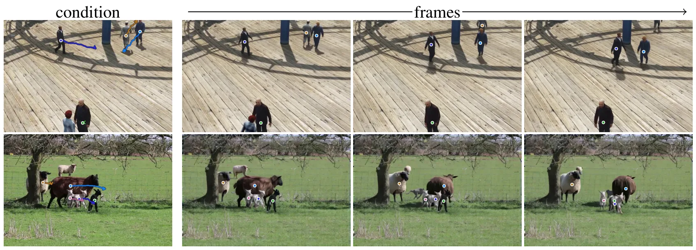
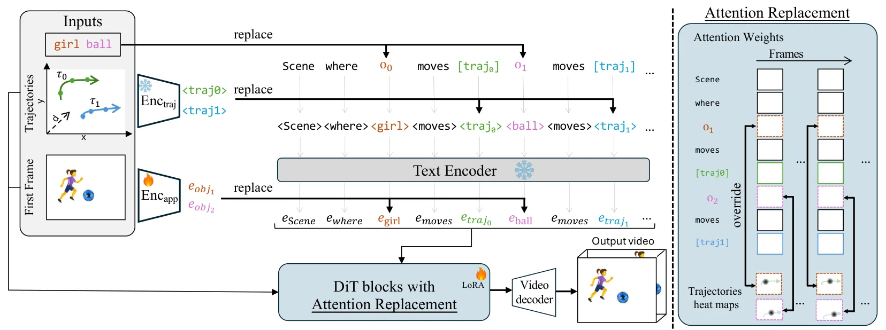
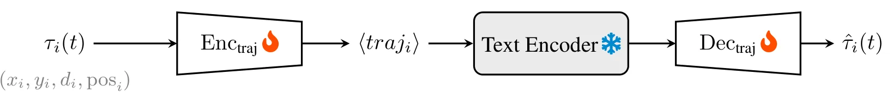
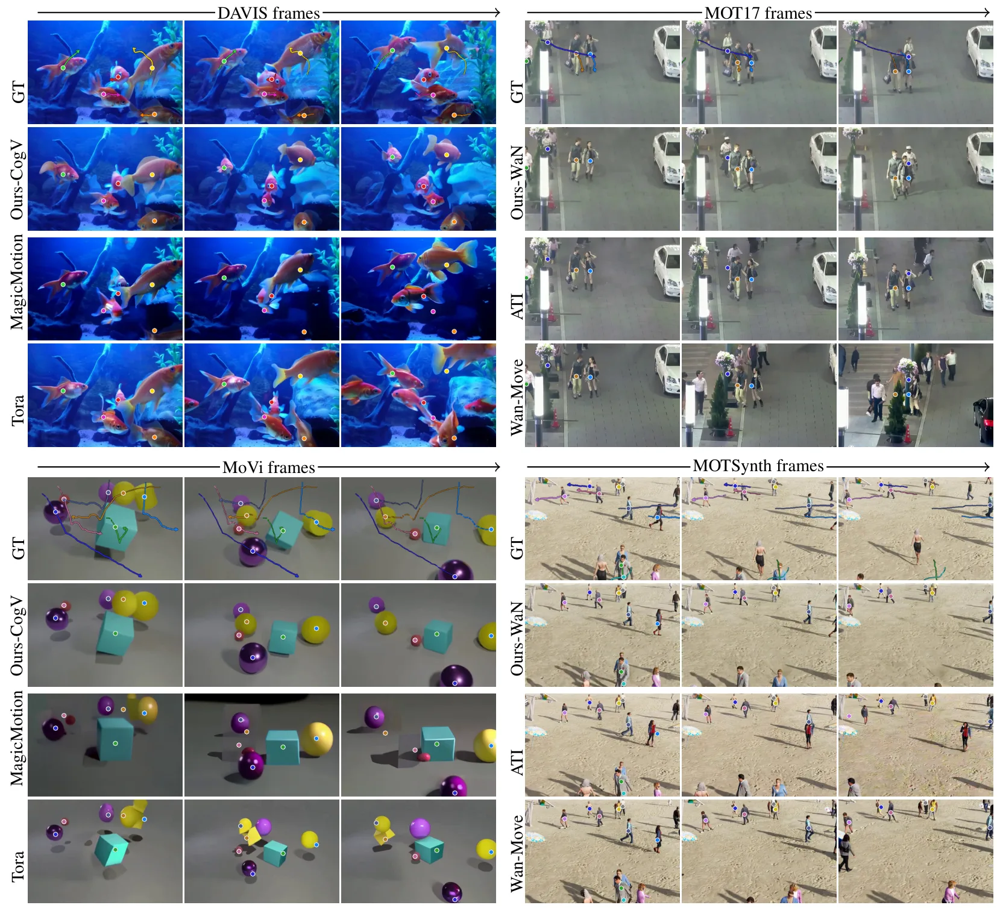
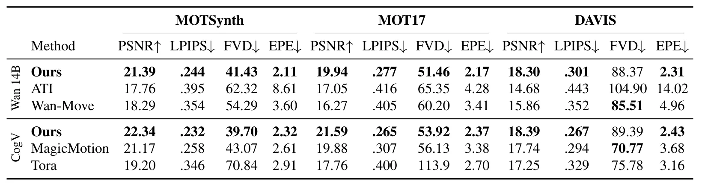
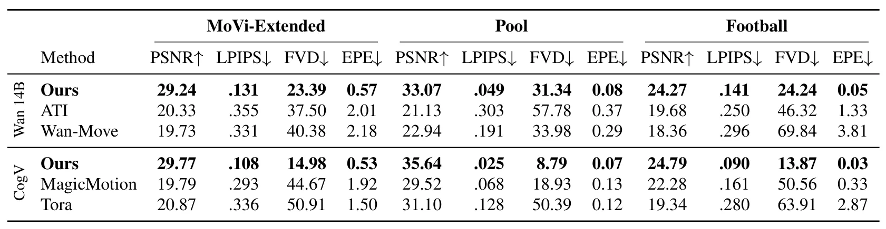

TrajLoc：用于多目标运动控制的轨迹注意力定位TrajLoc: Trajectory-Attention Localization for Multi-Object Motion Control
不是实际机器人定位/建图算法，但对动态场景仿真、可控数据生成和 trajectory-conditioned video 有参考价值。
一句话工作总结
在视频生成 attention 中直接施加 per-object Gaussian 位置约束，让多个对象更准确沿指定轨迹运动。
摘要
TrajLoc 研究 image-to-video generation 中多对象轨迹控制问题。传统方法把多个目标轨迹混在共享 dense conditioning 中，在目标数量增加、路径交叉或遮挡时难以保持身份和轨迹对应。TrajLoc 在 attention 层内为每个 object token 施加严格空间约束：用以目标位置为中心的 Gaussian heatmap 替换该 token 的 cross-attention weights；同一 token 还携带轨迹、深度和首帧外观信息。作者在 6 个数据集和最多 20 个同时受控对象上验证，应用到 CogVideoX 5B 与 WaN 2.1 14B 后，平均 PSNR 提升 +4.3 dB，轨迹终点误差降低 51%。
Controlling the motion of multiple objects in image-to-video (I2V) generation requires preserving object identities while enforcing adherence to distinct target trajectories. This becomes particularly challenging as the number of objects increases and their paths intersect or occlude one another. Existing approaches entangle multiple trajectories within a shared, dense conditioning signal, making object-level correspondence difficult to preserve in crowded scenes. We depart from this paradigm and enforce a strict, per object spatial constraint that isolates instances independently. Our method, TrajLoc, achieves this directly within the attention layers by substituting the cross-attention weights of each object token with a Gaussian heatmap centered on its target location at every frame. The same per object token interface carries trajectory and depth through a learned embedding and preserves identity by encoding first frame appearance in place of an object token. Evaluations across six datasets, featuring up to 20 simultaneously controlled objects and out of distribution real world scenes, demonstrate that our method consistently improves both visual fidelity and trajectory adherence. Applied to two architecturally distinct backbones (CogVideoX 5B and WaN 2.1 14B), our approach achieves average gains of +4.3 dB PSNR and a 51% reduction in trajectory end point error compared to the strongest baselines. Project page: https://sela-omer.github.io/traj-loc/
中文解读摘录
- 为什么看：主要是 image-to-video generation 控制论文，不是定位算法；但它把每个物体的轨迹、深度和外观 token 解耦，并在 attention 中显式强制空间位置，对多目标动态场景生成、仿真数据合成和轨迹可控视频有参考价值。
- 方法要点：用以目标位置为中心的 Gaussian heatmap 替换每个 object token 的 cross-attention weights；同一 per-object token 接收轨迹和深度 embedding，并用首帧外观保持身份。
- 结果信号：在最多 20 个受控对象、轨迹交叉和遮挡场景中，应用到 CogVideoX 5B 与 WaN 2.1 14B 后，平均 PSNR +4.3 dB、trajectory end-point error 降低 51%。项目页：https://sela-omer.github.io/traj-loc/
- 跟踪建议：若关注自动驾驶/机器人仿真数据生成，可看其 object-level trajectory conditioning 是否能生成更可控的动态障碍物视频；对实际 SLAM 后端价值有限。
- 链接：abs · PDF
图表/页面预览
{kind=link}

{kind=link}

{kind=link}

{kind=link}

{kind=link}

{kind=link}
